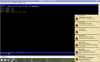

To make this possible you need the irssi proxy to be configured(find out how here), the libnotify library and its python bindings, the python irclib library, python and optionally, if you’re behind a restrictive proxy like for example Squid, an ssh client capable of port forwarding, more on this later on.
{kind=link}
OK, now let's go deep into installing a configuring this baby. Install instructions will be based on Kubuntu, my laptop's distribution, but they should work for any Debian based distribution. Let's install the needed dependencies:
apt-get install libnotify1 python-notify python-gtk2 python-setuptools \
python-irclib notification-daemon
Once the above is finished, you can use setuptools easy_install tool to install Irssi Notifier, so let's install it:
easy_install IrssiNotifier
The above command will install Irssi Notifier into python's site-packages and the irssi-notifier binary into /usr/bin/.
Now, until you get your configuration settings right and Irssi Notifier does not throw you an error do, in case you’ve setup irssi proxy to listen on domain example.tld, port 55555 with the proxy password Bar for the nick Foo:
irssi-notifier -P example.tld:55555:Foo -p BAR
If the above did not throw error(it shouldn't) then you can write the configuration to file(defaults to ~/.irssinotification):
irssi-notifier -P example.tld:55555:Foo -p BAR -W
Now, next time you want to launch Irssi Notifier, you just have to issue:
irssi-notifier
Now, some explanation to what gets written to the configuration file plus some other available configuration options:
[main]
passwd = BAR
proxies = example.tld:55555:FOO
timeout = 5
friends = foobar barfoo
- nick - The common nick used in all defined proxies
- passwd - The irssi proxy password
- proxies - A space separated list of irssi proxies to listen to composed of <address>:<port> or <address>:<port>:<nick>. If you choose the first way to define the proxy you must also provide the nick configuration variable, that’s the way we know messages are addressed to you.
- timeout - Timeout in seconds for the pop-up notification to go away.
- friends - A space separated list of your friends nicks to be notified when they join, part, quit or change nicks.
That's about what's needed to run Irssi Notifier.
As a secondary subject for those that, like me, are behind a restrictive firewall and the only way out is through an http proxy(Squid), you still have an option, OpenSSH with Connect-Proxy.
Connect-Proxy is basically an OpenSSH extension to enable ssh connections through a proxy server. There's info on how to use the Connect-Proxy on its own page, basicly, in my specific case, I need to connect to the http proxy and authentication is not required, so I changed my ~/.ssh/config and added:
ProxyCommand connect-proxy -H <proxy_host>:<proxy_port> %h %p
Now, for every ssh connection that command is executed, and that's how I'm able to ssh trough the http proxy. And for irssi notifier, basically, I establish a tunnel for each irssi proxy connection defined, for example:
ssh -L 55555:localhost:55555 user@remote.tld
Back to your own usage, now you should instead point Irssi Notifier to localhost instead of the remote host.
irssi-notifier -P localhost:55555:Foo -p BAR
And that's it, I hope you enjoy Irssi-Notification and feel free to comment on it.
23-05-2007:
Released a bugfix release, IrssiNotification 0.1.1:
- Fixed a bug regarding private messages notification. Whitin a private conversation, even our own messages were beeing notified to us.
07-09-2007:
Corrected blog post on the missing dependency and wrong package name, thanks Markus.
Comments
comments powered by Disqus